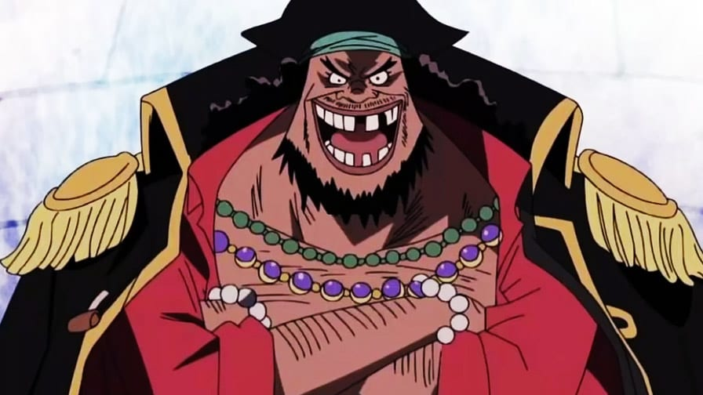

One Piece Quiz
1) Quem é este personagem ?
Hody
Arlong
Fisher tiger
2) Jinbei ja foi um shichibukai?
Verdadeiro
Falso
3) quando luffy usou o haki do rei pela primeira vez?
Marineford
Skypiea
Ilha dos tritões
4) qual desses shichibukai luffy derrotou?
Boa hancock
Mihawk
Doflamingo
5) Gol D. roger ja foi o rei dos piratas ?
Verdadeiro
Falso
6) qual tipo de haki que usopp usou no anime?
Haki do rei
Haki da observação
Haki do armamento
7) Quem é este personagem ?
Kin'emon
Ashura
Raizo
8) Qual foi o valor da 1º recompensa de chopper?
500 berries
1000 berries
50 berries
9) qual nome dessa espada?
Shusui
Enma
Sandai Kitetsu
10) Qual é ultima ilha da grand line?
Laftel
Arquipélago Boin
Dressrosa

11) quais são os poderes do braba negra ?
Escuridão e raio
Escuridão e terremoto
Terremoto e fogo
SCORE:
RECORDE: